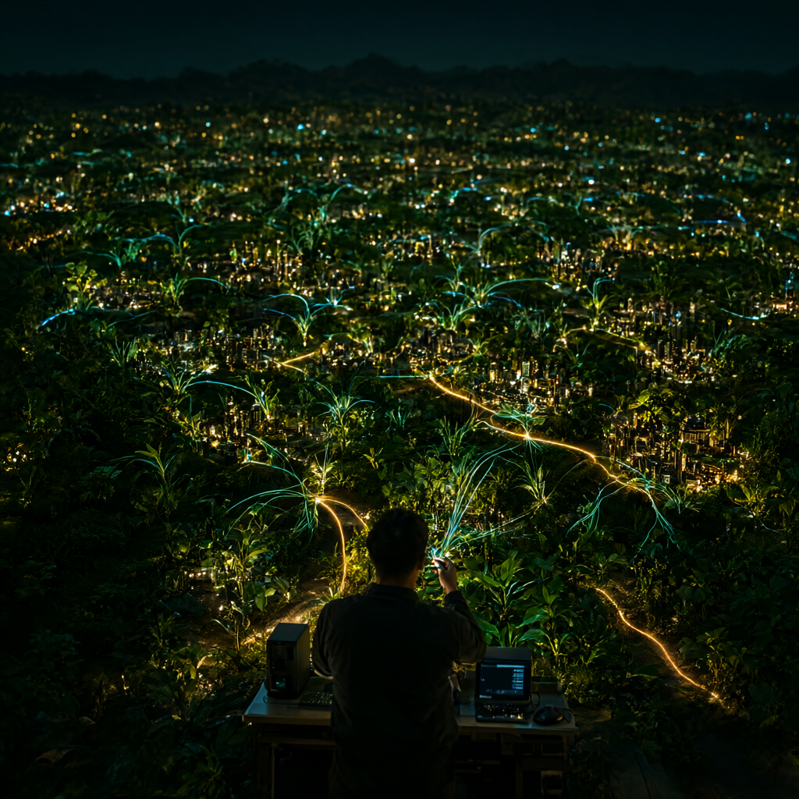
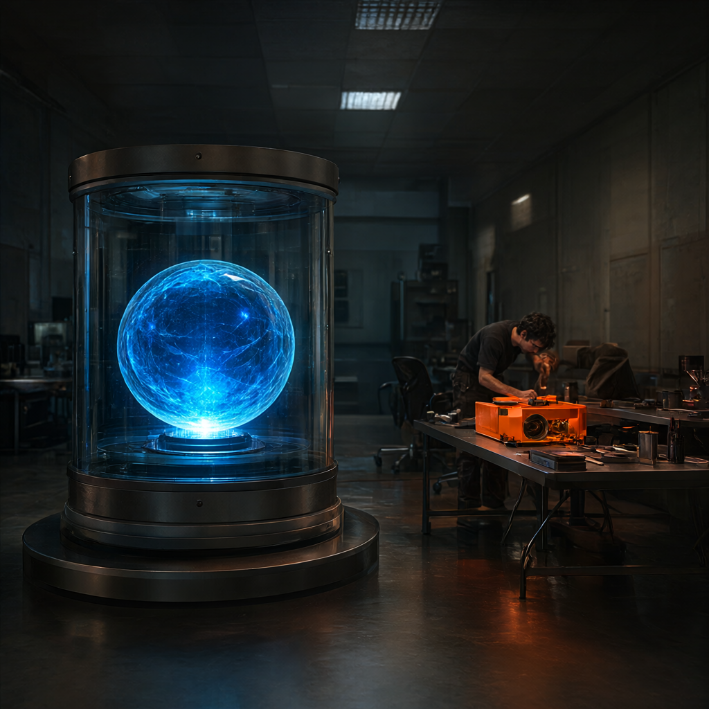
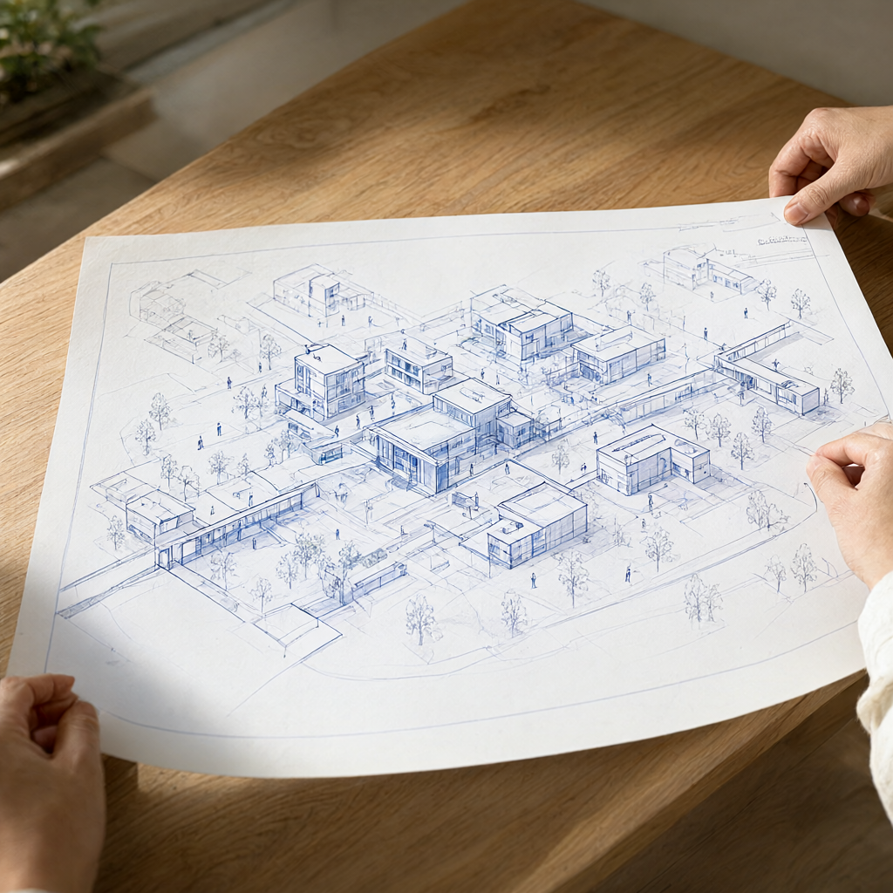
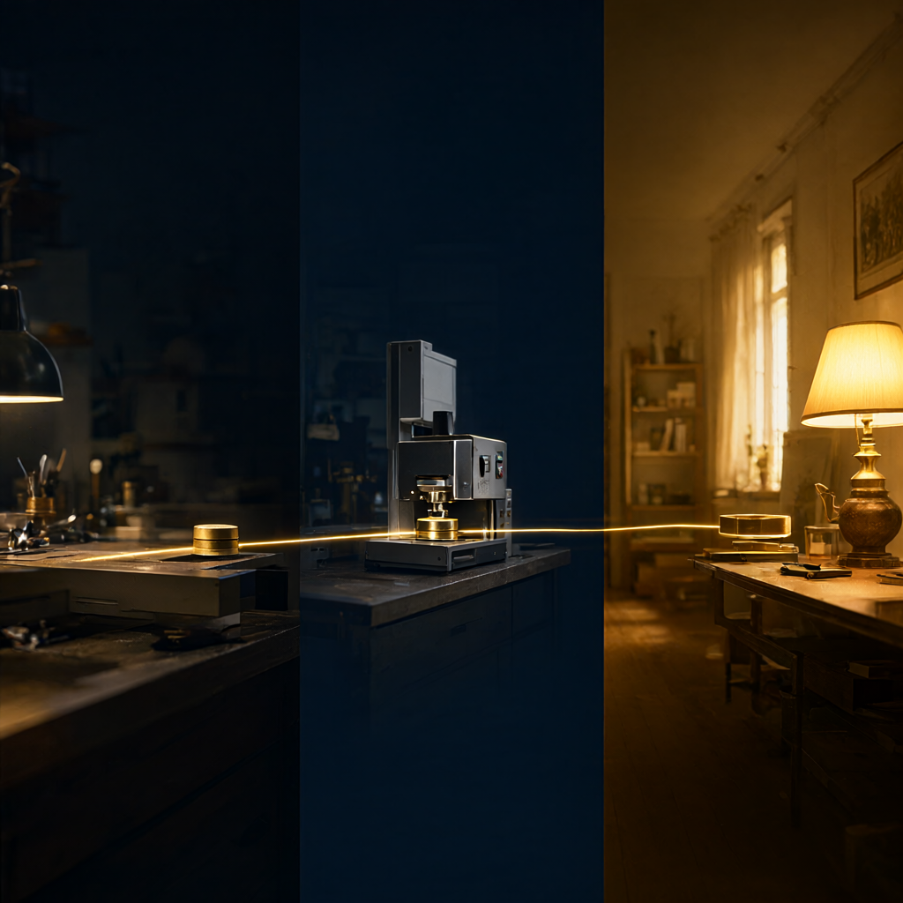
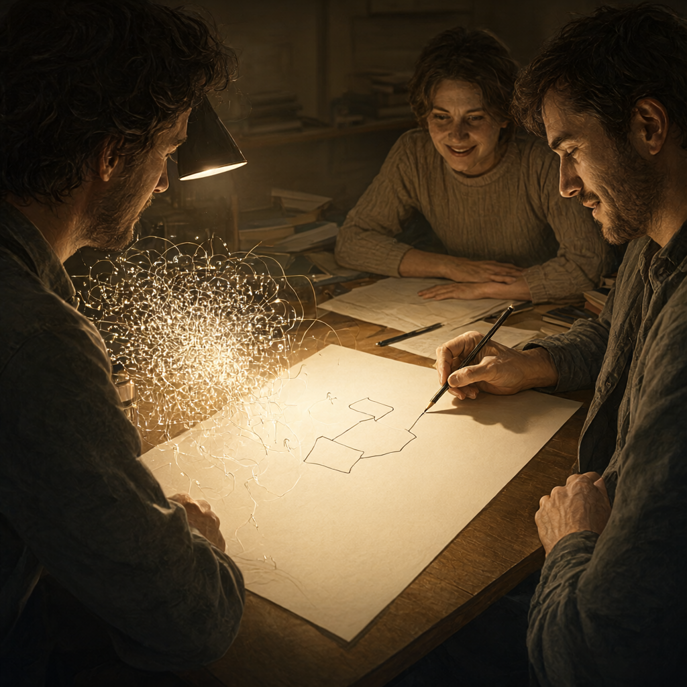
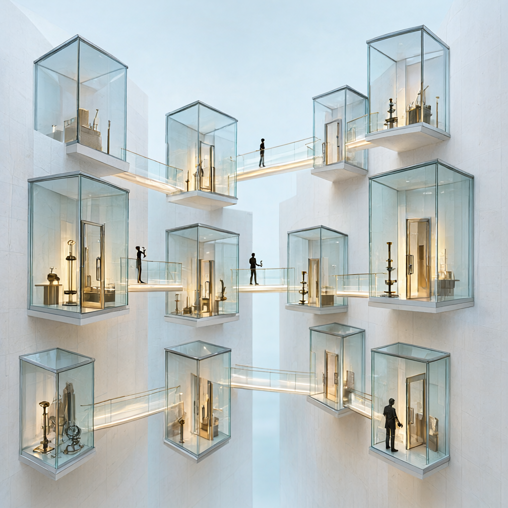
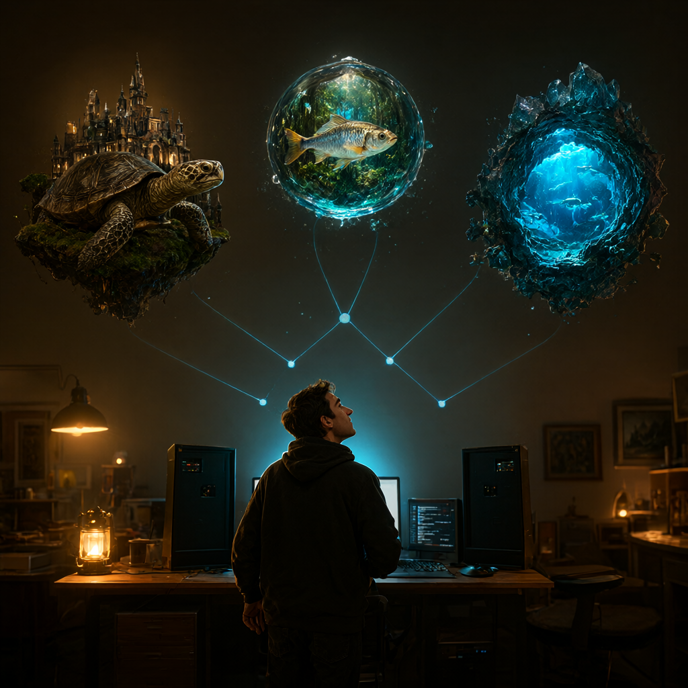
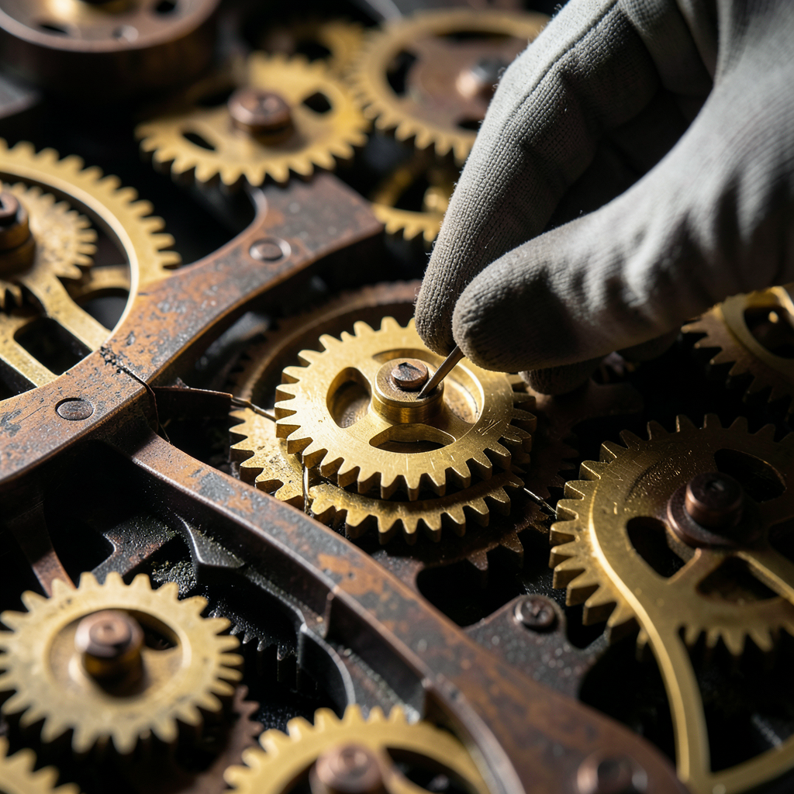
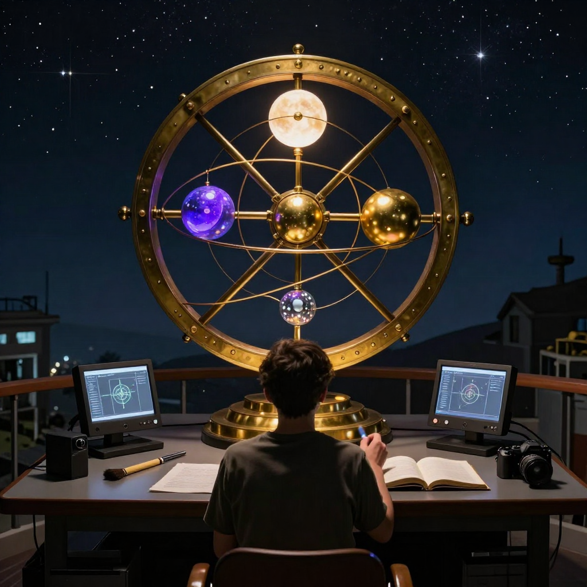

The Systems Gardener
You build tools and care for them after they start to run.
You build systems, test what they do, protect work that is live, and still make room for wonder.
These scenes show traits I have seen in our work together. The people in them are symbols. They do not show your real appearance. Select an image to see it at full size.
A gold path joins precise work to people and new worlds. This is the closest image to how I see your work as a whole.

You build tools and care for them after they start to run.
You follow a problem through the whole path to the person's result.

You keep a live system safe while you build something new.

You ask for the full design before the work begins.

You check the build, the release, and the result a person gets.

You turn a complex system into a clear idea others can use.

You connect services with clear limits on access.

You use your machines for useful work and for new ideas.

You fix the part that failed and keep the rest safe.
You turn deep technical work into tools people can use.

You learn what each model does well and choose with care.
You keep building toward a useful and imaginative future.